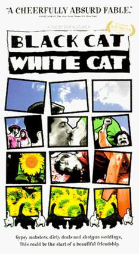
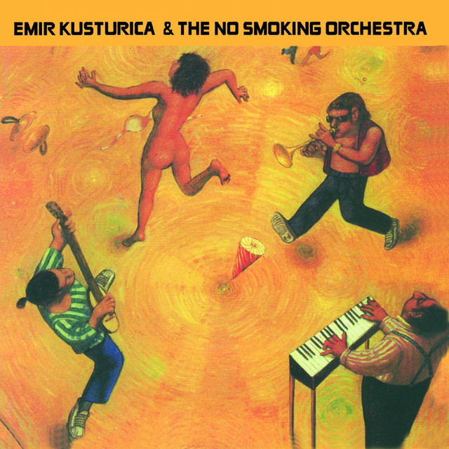
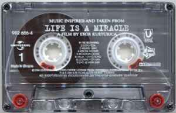

Kusturica começou a fazer cinema ainda no colégio, dirigindo filmes independentes. Alguns destes foram premiados em festivais nacionais amadores. Ele estudou na Famu, uma famosa academia cinematográfica de Praga, entre 1973 e 1977. Brilhante aluno, Kusturica estudou com o diretor checo Otakar Vavra. O estudante Kusturica ganhou o primeiro prémio do Festival Internacional de Cinema Estudantil de Karlovy-Vary, no mesmo país, com o seu projecto final de graduação, a curta-metragem em preto-e-branco Guernica (1978).
Black Cat, white cat - 1998
Unza Unza time - 2000
Life is a miracle - 2004
Concerto coliseu dos recreios em Lisboa.
Concerto coliseu dos recreios em Porto.
Concerto Estadio Municipal de Coimbra.
Águeda, Portugal
Phone: +123 456 789
E-mail: EmirKusturica@yahoo.com.br